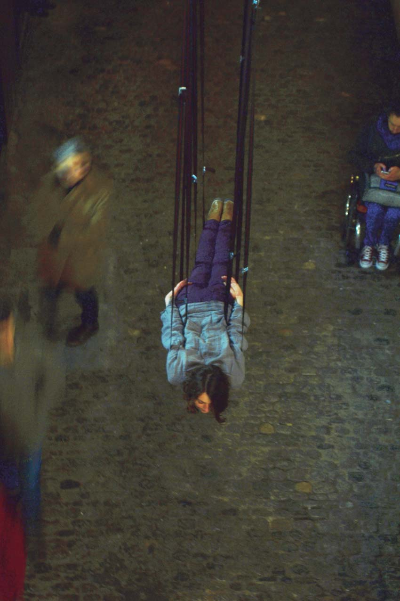
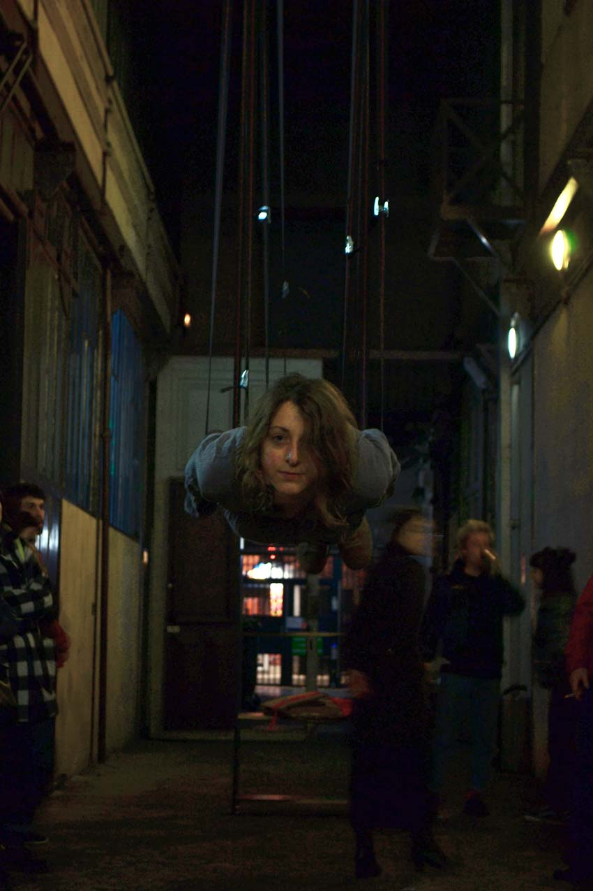
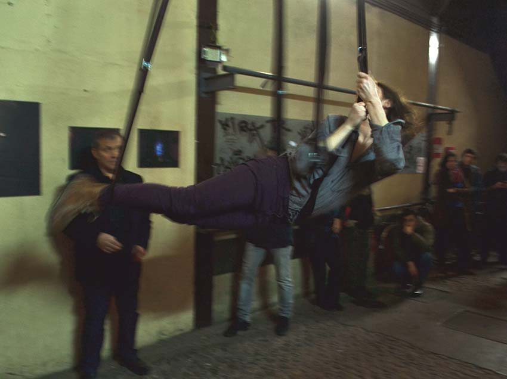
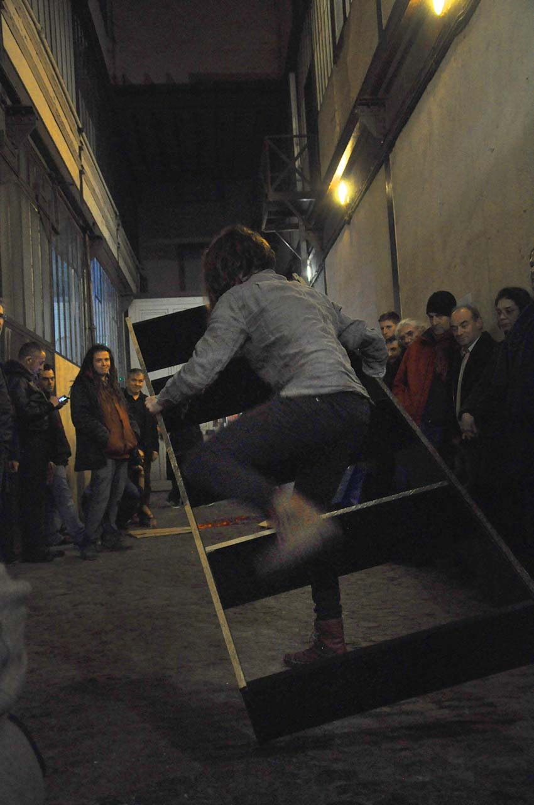

Jessica Arseneau
::: portfolio
Images and projects
A Thousand Times Nothing
2016
Performance
00:40:00
Rencontres Traverse Vidéo, Toulouse, France
Photo credits: R. Larocque

Act 1.
Lashing straps are holding the body in an horizontal position, approximately one meter and a half away from the ground. It incarnates moments that are in suspense like those in dramatic works or of waiting situations. For instance, the short seconds that occurs just before to see the winning numbers of a lottery or the days that occupants of a house are counting while they might possibly face eviction.
This act of hanging stretches for about 25 minutes. It starts before the audience arrived and it stops when everyone has fully entered the room.

Act 2.
The body slowly untangled itself from the strings that are holding it in the air in order to finally touch the ground.

Act 3.
A black bookshelf is standing a few meters away in the hallway with cardboards, a black marker pen and a drill. The body approaches the shelf and takes a piece of cardboard. With the marker pen it writes “Entracte 2”. The french word for entr'acte. Entr’acte is the moment between two scenes in a play or a concert. It’ a temporal zone where supposedly nothing happens.
The body takes the shelf and makes an awkward dance which accompanies with a wooden cracking music made from the movements. Neither the body adapts itself to the object nor the object adapt itself to the body. This choreography continues until the bookshelf is brought to the lashing straps. It is put down in a way that the straps are holding it in a diagonal position.

Acte 4.
Le corps prend une autre pièce de carton et écrit «Entracte 3».
Le corps prend la perceuse électrique et commence à démonter la structure de la bibliothèque jusqu’à ce qu’elle ne devient plus que des morceaux de bois sans n’avoir de forme architecturale. Les morceaux s’effondrent sur le plancher de brique — faisant voyager un bruit de claquement dans le couloir.

Acte 5.
Le corps prend encore une pièce de carton et écrit «Entracte 4».
Ensuite, il la transforme en une boîte de carton de taille moyenne. Les plus petits morceaux de bois qui sont sur le sol sont soulevés et, en quelque sorte, rangés dans la boîte de carton.
Le corps pousse la boîte et ses morceaux de bois désordonnés, laissant le reste derrière. Il la pousse jusqu’au coin gauche du couloir, à côté de la porte de sortie.